Exercise 2： Let CBDG be a parallelogram. BEFD is a trapezoid with BD//EF and BD=2EF. ABEC is a trapezoid with AC//BE and AC=2BE. AG=2FD. Prove that AC⊥BD.
Exercise 17： Let BFDE be a trapezoid with FB//DE and FB=2DE. BADE is a trapezoid with AD//BE and AD=2BE. H, G are the midpoints of AB, CD, respectively. FC=2HG. Prove that AC⊥BD.
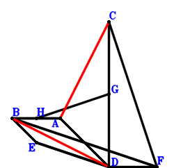
\(\because \) AD//BE and AD=2BE \(\therefore \small\overrightarrow{DE}=- \dfrac{\small\overrightarrow{DA}}{2} + \small\overrightarrow{DB}\).\(\because \) FB//DE and FB=2DE \(\therefore \small\overrightarrow{DF}=\small\overrightarrow{DB} - 2 \small\overrightarrow{DE}=\small\overrightarrow{DA} - \small\overrightarrow{DB}\).\(\because \) G is the midpoint of CD \(\therefore \small\overrightarrow{DG}=\dfrac{\small\overrightarrow{DC}}{2}\).\(\because \) H is the midpoint of AB \(\therefore \small\overrightarrow{DH}=\dfrac{\small\overrightarrow{DA}}{2} + \dfrac{\small\overrightarrow{DB}}{2}\).\(\because \) FC=2HG \( \therefore\dfrac{\small\overrightarrow{FC}^{2}}{4} - \small\overrightarrow{GH}^{2}=\dfrac{\left(\small\overrightarrow{DC} - \small\overrightarrow{DF}\right)^{2}}{4} - \left(- \small\overrightarrow{DG} + \small\overrightarrow{DH}\right)^{2}=\dfrac{\left(- \small\overrightarrow{DA} + \small\overrightarrow{DB} + \small\overrightarrow{DC}\right)^{2}}{4} - \left(\dfrac{\small\overrightarrow{DA}}{2} + \dfrac{\small\overrightarrow{DB}}{2} - \dfrac{\small\overrightarrow{DC}}{2}\right)^{2}=- \small\overrightarrow{DA} \cdot \small\overrightarrow{DB} + \small\overrightarrow{DB} \cdot \small\overrightarrow{DC}=0.\)In conclusion, \(\small\overrightarrow{CA} \cdot \small\overrightarrow{DB}=\small\overrightarrow{DB} \cdot \left(\small\overrightarrow{DA} - \small\overrightarrow{DC}\right)=\small\overrightarrow{DA} \cdot \small\overrightarrow{DB} - \small\overrightarrow{DB} \cdot \small\overrightarrow{DC}=0\), that is, AC⊥BD.
Exercise 30： Let FDBE and GDBC be parallelograms. CDBE is a trapezoid with CE//DB and CE=2DB. AF=GA. Prove that CA⊥DB.
Exercise 38： Let CBDF be a parallelogram. ABDE is a trapezoid with AE//BD and AE=2BD. H, G are the midpoints of BA, CD, respectively. FE=2HG. Prove that AC⊥BD.
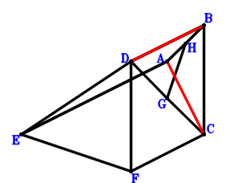
\(\because \) AE//BD and AE=2BD \(\therefore \small\overrightarrow{DE}=\small\overrightarrow{DA} - 2 \small\overrightarrow{DB}\).\(\because \) CBDF is a parallelogram \(\therefore \small\overrightarrow{DF}=- \small\overrightarrow{DB} + \small\overrightarrow{DC}\).\(\because \) G is the midpoint of CD \(\therefore \small\overrightarrow{DG}=\dfrac{\small\overrightarrow{DC}}{2}\).\(\because \) H is the midpoint of BA \(\therefore \small\overrightarrow{DH}=\dfrac{\small\overrightarrow{DA}}{2} + \dfrac{\small\overrightarrow{DB}}{2}\).\(\because \) FE=2HG \( \therefore\dfrac{\small\overrightarrow{EF}^{2}}{4} - \small\overrightarrow{GH}^{2}=\dfrac{\left(- \small\overrightarrow{DE} + \small\overrightarrow{DF}\right)^{2}}{4} - \left(- \small\overrightarrow{DG} + \small\overrightarrow{DH}\right)^{2}=\dfrac{\left(- \small\overrightarrow{DA} + \small\overrightarrow{DB} + \small\overrightarrow{DC}\right)^{2}}{4} - \left(\dfrac{\small\overrightarrow{DA}}{2} + \dfrac{\small\overrightarrow{DB}}{2} - \dfrac{\small\overrightarrow{DC}}{2}\right)^{2}=- \small\overrightarrow{DA} \cdot \small\overrightarrow{DB} + \small\overrightarrow{DB} \cdot \small\overrightarrow{DC}=0.\)In conclusion, \(\small\overrightarrow{CA} \cdot \small\overrightarrow{DB}=\small\overrightarrow{DB} \cdot \left(\small\overrightarrow{DA} - \small\overrightarrow{DC}\right)=\small\overrightarrow{DA} \cdot \small\overrightarrow{DB} - \small\overrightarrow{DB} \cdot \small\overrightarrow{DC}=0\), that is, AC⊥BD.
Exercise 50： Let ACED and ADBG be parallelograms. DEFB is a trapezoid with EF//DB and EF=2DB. BF=CG. Prove that AC⊥DB.
Exercise 55： Let EBCA be a parallelogram. EBDF is a trapezoid with EF//BD and EF=2BD. H, G are the midpoints of BA, CD, respectively. DF=2HG. Prove that AC⊥BD.
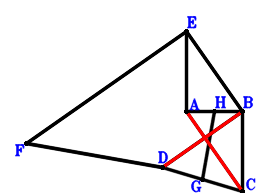
\(\because \) EBCA is a parallelogram \(\therefore \small\overrightarrow{DE}=\small\overrightarrow{DA} + \small\overrightarrow{DB} - \small\overrightarrow{DC}\).\(\because \) EF//BD and EF=2BD \(\therefore \small\overrightarrow{DF}=\small\overrightarrow{DA} - \small\overrightarrow{DB} - \small\overrightarrow{DC}\).\(\because \) G is the midpoint of CD \(\therefore \small\overrightarrow{DG}=\dfrac{\small\overrightarrow{DC}}{2}\).\(\because \) H is the midpoint of BA \(\therefore \small\overrightarrow{DH}=\dfrac{\small\overrightarrow{DA}}{2} + \dfrac{\small\overrightarrow{DB}}{2}\).\(\because \) DF=2HG \( \therefore\dfrac{\small\overrightarrow{FD}^{2}}{4} - \small\overrightarrow{GH}^{2}=\dfrac{\small\overrightarrow{DF}^{2}}{4} - \left(- \small\overrightarrow{DG} + \small\overrightarrow{DH}\right)^{2}=- \left(\dfrac{\small\overrightarrow{DA}}{2} + \dfrac{\small\overrightarrow{DB}}{2} - \dfrac{\small\overrightarrow{DC}}{2}\right)^{2} + \dfrac{\left(\small\overrightarrow{DA} - \small\overrightarrow{DB} - \small\overrightarrow{DC}\right)^{2}}{4}=- \small\overrightarrow{DA} \cdot \small\overrightarrow{DB} + \small\overrightarrow{DB} \cdot \small\overrightarrow{DC}=0.\)In conclusion, \(\small\overrightarrow{CA} \cdot \small\overrightarrow{DB}=\small\overrightarrow{DB} \cdot \left(\small\overrightarrow{DA} - \small\overrightarrow{DC}\right)=\small\overrightarrow{DA} \cdot \small\overrightarrow{DB} - \small\overrightarrow{DB} \cdot \small\overrightarrow{DC}=0\), that is, AC⊥BD.
Exercise 74： Let GCAD be a parallelogram. ECBF is a trapezoid with CB//EF and CB=2EF. E is the midpoint of AD. GB=2BF. Prove that CA⊥DB.
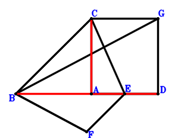
\(\because \) E is the midpoint of AD \(\therefore \small\overrightarrow{BE}=\dfrac{\small\overrightarrow{BA}}{2} + \dfrac{\small\overrightarrow{BD}}{2}\).\(\because \) CB//EF and CB=2EF \(\therefore \small\overrightarrow{BF}=\dfrac{\small\overrightarrow{BA}}{2} - \dfrac{\small\overrightarrow{BC}}{2} + \dfrac{\small\overrightarrow{BD}}{2}\).\(\because \) GCAD is a parallelogram \(\therefore \small\overrightarrow{BG}=- \small\overrightarrow{BA} + \small\overrightarrow{BC} + \small\overrightarrow{BD}\).\(\because \) GB=2BF \( \therefore\small\overrightarrow{BF}^{2} - \dfrac{\small\overrightarrow{BG}^{2}}{4}=- \dfrac{\left(- \small\overrightarrow{BA} + \small\overrightarrow{BC} + \small\overrightarrow{BD}\right)^{2}}{4} + \left(\dfrac{\small\overrightarrow{BA}}{2} - \dfrac{\small\overrightarrow{BC}}{2} + \dfrac{\small\overrightarrow{BD}}{2}\right)^{2}=\small\overrightarrow{BA} \cdot \small\overrightarrow{BD} - \small\overrightarrow{BC} \cdot \small\overrightarrow{BD}=0.\)In conclusion, \(\small\overrightarrow{CA} \cdot \small\overrightarrow{DB}=- \small\overrightarrow{BD} \cdot \left(\small\overrightarrow{BA} - \small\overrightarrow{BC}\right)=- \small\overrightarrow{BA} \cdot \small\overrightarrow{BD} + \small\overrightarrow{BC} \cdot \small\overrightarrow{BD}=0\), that is, CA⊥DB.
Exercise 90： Let DBAE and DACF be parallelograms. EC=BF. Prove that AC⊥DB.
Exercise 102： Let ABEC be a parallelogram. F, G are the midpoints of CD, BA, respectively. ED=2GF. Prove that AC⊥BD.
\(\because \) ABEC is a parallelogram \(\therefore \small\overrightarrow{DE}=- \small\overrightarrow{DA} + \small\overrightarrow{DB} + \small\overrightarrow{DC}\).\(\because \) F is the midpoint of CD \(\therefore \small\overrightarrow{DF}=\dfrac{\small\overrightarrow{DC}}{2}\).\(\because \) G is the midpoint of BA \(\therefore \small\overrightarrow{DG}=\dfrac{\small\overrightarrow{DA}}{2} + \dfrac{\small\overrightarrow{DB}}{2}\).\(\because \) ED=2GF \( \therefore\dfrac{\small\overrightarrow{DE}^{2}}{4} - \small\overrightarrow{FG}^{2}=\dfrac{\small\overrightarrow{DE}^{2}}{4} - \left(- \small\overrightarrow{DF} + \small\overrightarrow{DG}\right)^{2}=\dfrac{\left(- \small\overrightarrow{DA} + \small\overrightarrow{DB} + \small\overrightarrow{DC}\right)^{2}}{4} - \left(\dfrac{\small\overrightarrow{DA}}{2} + \dfrac{\small\overrightarrow{DB}}{2} - \dfrac{\small\overrightarrow{DC}}{2}\right)^{2}=- \small\overrightarrow{DA} \cdot \small\overrightarrow{DB} + \small\overrightarrow{DB} \cdot \small\overrightarrow{DC}=0.\)In conclusion, \(\small\overrightarrow{CA} \cdot \small\overrightarrow{DB}=\small\overrightarrow{DB} \cdot \left(\small\overrightarrow{DA} - \small\overrightarrow{DC}\right)=\small\overrightarrow{DA} \cdot \small\overrightarrow{DB} - \small\overrightarrow{DB} \cdot \small\overrightarrow{DC}=0\), that is, AC⊥BD.
Exercise 106： Let BCGD be a parallelogram. F, E are the midpoints of BC, AD, respectively. AG=2FE. Prove that CA⊥BD.
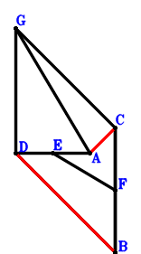
\(\because \) E is the midpoint of AD \(\therefore \small\overrightarrow{DE}=\dfrac{\small\overrightarrow{DA}}{2}\).\(\because \) F is the midpoint of BC \(\therefore \small\overrightarrow{DF}=\dfrac{\small\overrightarrow{DB}}{2} + \dfrac{\small\overrightarrow{DC}}{2}\).\(\because \) BCGD is a parallelogram \(\therefore \small\overrightarrow{DG}=- \small\overrightarrow{DB} + \small\overrightarrow{DC}\).\(\because \) AG=2FE \( \therefore\small\overrightarrow{EF}^{2} - \dfrac{\small\overrightarrow{GA}^{2}}{4}=- \dfrac{\left(\small\overrightarrow{DA} - \small\overrightarrow{DG}\right)^{2}}{4} + \left(- \small\overrightarrow{DE} + \small\overrightarrow{DF}\right)^{2}=\left(- \dfrac{\small\overrightarrow{DA}}{2} + \dfrac{\small\overrightarrow{DB}}{2} + \dfrac{\small\overrightarrow{DC}}{2}\right)^{2} - \dfrac{\left(\small\overrightarrow{DA} + \small\overrightarrow{DB} - \small\overrightarrow{DC}\right)^{2}}{4}=- \small\overrightarrow{DA} \cdot \small\overrightarrow{DB} + \small\overrightarrow{DB} \cdot \small\overrightarrow{DC}=0.\)In conclusion, \(\small\overrightarrow{CA} \cdot \small\overrightarrow{DB}=\small\overrightarrow{DB} \cdot \left(\small\overrightarrow{DA} - \small\overrightarrow{DC}\right)=\small\overrightarrow{DA} \cdot \small\overrightarrow{DB} - \small\overrightarrow{DB} \cdot \small\overrightarrow{DC}=0\), that is, CA⊥BD.
Exercise 110： Let F, H, E, G be the midpoints of CB, AB, AD, CD, respectively. EF=HG. Prove that AC⊥BD.
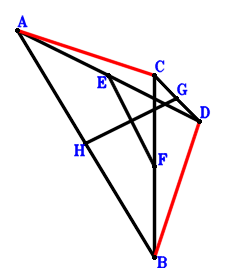
\(\because \) E is the midpoint of AD \(\therefore \small\overrightarrow{DE}=\dfrac{\small\overrightarrow{DA}}{2}\).\(\because \) F is the midpoint of CB \(\therefore \small\overrightarrow{DF}=\dfrac{\small\overrightarrow{DB}}{2} + \dfrac{\small\overrightarrow{DC}}{2}\).\(\because \) G is the midpoint of CD \(\therefore \small\overrightarrow{DG}=\dfrac{\small\overrightarrow{DC}}{2}\).\(\because \) H is the midpoint of AB \(\therefore \small\overrightarrow{DH}=\dfrac{\small\overrightarrow{DA}}{2} + \dfrac{\small\overrightarrow{DB}}{2}\).\(\because \) EF=HG \( \therefore\small\overrightarrow{EF}^{2} - \small\overrightarrow{GH}^{2}=\left(- \small\overrightarrow{DE} + \small\overrightarrow{DF}\right)^{2} - \left(- \small\overrightarrow{DG} + \small\overrightarrow{DH}\right)^{2}=\left(- \dfrac{\small\overrightarrow{DA}}{2} + \dfrac{\small\overrightarrow{DB}}{2} + \dfrac{\small\overrightarrow{DC}}{2}\right)^{2} - \left(\dfrac{\small\overrightarrow{DA}}{2} + \dfrac{\small\overrightarrow{DB}}{2} - \dfrac{\small\overrightarrow{DC}}{2}\right)^{2}=- \small\overrightarrow{DA} \cdot \small\overrightarrow{DB} + \small\overrightarrow{DB} \cdot \small\overrightarrow{DC}=0.\)In conclusion, \(\small\overrightarrow{CA} \cdot \small\overrightarrow{DB}=\small\overrightarrow{DB} \cdot \left(\small\overrightarrow{DA} - \small\overrightarrow{DC}\right)=\small\overrightarrow{DA} \cdot \small\overrightarrow{DB} - \small\overrightarrow{DB} \cdot \small\overrightarrow{DC}=0\), that is, AC⊥BD.
Exercise 118： Let GADB be a parallelogram. AEDC is a trapezoid with AC//ED and AC=2ED. F is the midpoint of BD. GC=2EF. Prove that AC⊥BD.
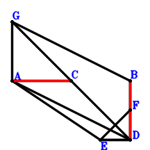
\(\because \) AC//ED and AC=2ED \(\therefore \small\overrightarrow{DE}=\dfrac{\small\overrightarrow{DA}}{2} - \dfrac{\small\overrightarrow{DC}}{2}\).\(\because \) F is the midpoint of BD \(\therefore \small\overrightarrow{DF}=\dfrac{\small\overrightarrow{DB}}{2}\).\(\because \) GADB is a parallelogram \(\therefore \small\overrightarrow{DG}=\small\overrightarrow{DA} + \small\overrightarrow{DB}\).\(\because \) GC=2EF \( \therefore- \dfrac{\small\overrightarrow{CG}^{2}}{4} + \small\overrightarrow{EF}^{2}=- \dfrac{\left(- \small\overrightarrow{DC} + \small\overrightarrow{DG}\right)^{2}}{4} + \left(- \small\overrightarrow{DE} + \small\overrightarrow{DF}\right)^{2}=\left(- \dfrac{\small\overrightarrow{DA}}{2} + \dfrac{\small\overrightarrow{DB}}{2} + \dfrac{\small\overrightarrow{DC}}{2}\right)^{2} - \dfrac{\left(\small\overrightarrow{DA} + \small\overrightarrow{DB} - \small\overrightarrow{DC}\right)^{2}}{4}=- \small\overrightarrow{DA} \cdot \small\overrightarrow{DB} + \small\overrightarrow{DB} \cdot \small\overrightarrow{DC}=0.\)In conclusion, \(\small\overrightarrow{CA} \cdot \small\overrightarrow{DB}=\small\overrightarrow{DB} \cdot \left(\small\overrightarrow{DA} - \small\overrightarrow{DC}\right)=\small\overrightarrow{DA} \cdot \small\overrightarrow{DB} - \small\overrightarrow{DB} \cdot \small\overrightarrow{DC}=0\), that is, AC⊥BD.
Exercise 119： Let BAED be a trapezoid with AB//ED and AB=2ED. F, G are the midpoints of CD, AB, respectively. EF=GF. Prove that AC⊥BD.
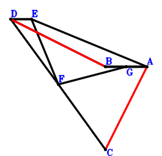
\(\because \) AB//ED and AB=2ED \(\therefore \small\overrightarrow{DE}=\dfrac{\small\overrightarrow{DA}}{2} - \dfrac{\small\overrightarrow{DB}}{2}\).\(\because \) F is the midpoint of CD \(\therefore \small\overrightarrow{DF}=\dfrac{\small\overrightarrow{DC}}{2}\).\(\because \) G is the midpoint of AB \(\therefore \small\overrightarrow{DG}=\dfrac{\small\overrightarrow{DA}}{2} + \dfrac{\small\overrightarrow{DB}}{2}\).\(\because \) EF=GF \( \therefore\small\overrightarrow{EF}^{2} - \small\overrightarrow{FG}^{2}=\left(- \small\overrightarrow{DE} + \small\overrightarrow{DF}\right)^{2} - \left(- \small\overrightarrow{DF} + \small\overrightarrow{DG}\right)^{2}=\left(- \dfrac{\small\overrightarrow{DA}}{2} + \dfrac{\small\overrightarrow{DB}}{2} + \dfrac{\small\overrightarrow{DC}}{2}\right)^{2} - \left(\dfrac{\small\overrightarrow{DA}}{2} + \dfrac{\small\overrightarrow{DB}}{2} - \dfrac{\small\overrightarrow{DC}}{2}\right)^{2}=- \small\overrightarrow{DA} \cdot \small\overrightarrow{DB} + \small\overrightarrow{DB} \cdot \small\overrightarrow{DC}=0.\)In conclusion, \(\small\overrightarrow{CA} \cdot \small\overrightarrow{DB}=\small\overrightarrow{DB} \cdot \left(\small\overrightarrow{DA} - \small\overrightarrow{DC}\right)=\small\overrightarrow{DA} \cdot \small\overrightarrow{DB} - \small\overrightarrow{DB} \cdot \small\overrightarrow{DC}=0\), that is, AC⊥BD.
Exercise 128： Let ADIC be a parallelogram. H, E are the midpoints of DC, AB, respectively. F is the midpoint of DE and GB. IB=2GH. Prove that AC⊥DB.
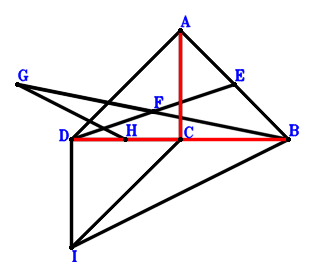
\(\because \) E is the midpoint of AB \(\therefore \small\overrightarrow{BE}=\dfrac{\small\overrightarrow{BA}}{2}\).\(\because \) F is the midpoint of DE \(\therefore \small\overrightarrow{BF}=\dfrac{\small\overrightarrow{BD}}{2} + \dfrac{\small\overrightarrow{BE}}{2}=\dfrac{\small\overrightarrow{BA}}{4} + \dfrac{\small\overrightarrow{BD}}{2}\).\(\because \) F is the midpoint of GB \(\therefore \small\overrightarrow{BG}=2 \small\overrightarrow{BF}=\dfrac{\small\overrightarrow{BA}}{2} + \small\overrightarrow{BD}\).\(\because \) H is the midpoint of DC \(\therefore \small\overrightarrow{BH}=\dfrac{\small\overrightarrow{BC}}{2} + \dfrac{\small\overrightarrow{BD}}{2}\).\(\because \) ADIC is a parallelogram \(\therefore \small\overrightarrow{BI}=- \small\overrightarrow{BA} + \small\overrightarrow{BC} + \small\overrightarrow{BD}\).\(\because \) IB=2GH \( \therefore\small\overrightarrow{GH}^{2} - \dfrac{\small\overrightarrow{IB}^{2}}{4}=- \dfrac{\small\overrightarrow{BI}^{2}}{4} + \left(- \small\overrightarrow{BG} + \small\overrightarrow{BH}\right)^{2}=- \dfrac{\left(- \small\overrightarrow{BA} + \small\overrightarrow{BC} + \small\overrightarrow{BD}\right)^{2}}{4} + \left(- \dfrac{\small\overrightarrow{BA}}{2} + \dfrac{\small\overrightarrow{BC}}{2} - \dfrac{\small\overrightarrow{BD}}{2}\right)^{2}=\small\overrightarrow{BA} \cdot \small\overrightarrow{BD} - \small\overrightarrow{BC} \cdot \small\overrightarrow{BD}=0.\)In conclusion, \(\small\overrightarrow{CA} \cdot \small\overrightarrow{DB}=- \small\overrightarrow{BD} \cdot \left(\small\overrightarrow{BA} - \small\overrightarrow{BC}\right)=- \small\overrightarrow{BA} \cdot \small\overrightarrow{BD} + \small\overrightarrow{BC} \cdot \small\overrightarrow{BD}=0\), that is, AC⊥DB.
Exercise 140： Let ACBH be a parallelogram. ABDE is a trapezoid with AE//BD and AE=2BD. F, G are the midpoints of BE, CD, respectively. HD=2GF. Prove that AC⊥BD.
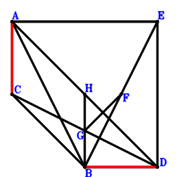
\(\because \) AE//BD and AE=2BD \(\therefore \small\overrightarrow{DE}=\small\overrightarrow{DA} - 2 \small\overrightarrow{DB}\).\(\because \) F is the midpoint of BE \(\therefore \small\overrightarrow{DF}=\dfrac{\small\overrightarrow{DB}}{2} + \dfrac{\small\overrightarrow{DE}}{2}=\dfrac{\small\overrightarrow{DA}}{2} - \dfrac{\small\overrightarrow{DB}}{2}\).\(\because \) G is the midpoint of CD \(\therefore \small\overrightarrow{DG}=\dfrac{\small\overrightarrow{DC}}{2}\).\(\because \) ACBH is a parallelogram \(\therefore \small\overrightarrow{DH}=\small\overrightarrow{DA} + \small\overrightarrow{DB} - \small\overrightarrow{DC}\).\(\because \) HD=2GF \( \therefore- \dfrac{\small\overrightarrow{DH}^{2}}{4} + \small\overrightarrow{FG}^{2}=- \dfrac{\small\overrightarrow{DH}^{2}}{4} + \left(- \small\overrightarrow{DF} + \small\overrightarrow{DG}\right)^{2}=\left(- \dfrac{\small\overrightarrow{DA}}{2} + \dfrac{\small\overrightarrow{DB}}{2} + \dfrac{\small\overrightarrow{DC}}{2}\right)^{2} - \dfrac{\left(\small\overrightarrow{DA} + \small\overrightarrow{DB} - \small\overrightarrow{DC}\right)^{2}}{4}=- \small\overrightarrow{DA} \cdot \small\overrightarrow{DB} + \small\overrightarrow{DB} \cdot \small\overrightarrow{DC}=0.\)In conclusion, \(\small\overrightarrow{CA} \cdot \small\overrightarrow{DB}=\small\overrightarrow{DB} \cdot \left(\small\overrightarrow{DA} - \small\overrightarrow{DC}\right)=\small\overrightarrow{DA} \cdot \small\overrightarrow{DB} - \small\overrightarrow{DB} \cdot \small\overrightarrow{DC}=0\), that is, AC⊥BD.
Exercise 145： Let ACBH and EBDF be parallelograms. E, G are the midpoints of AB, CD, respectively. HD=2GF. Prove that AC⊥BD.
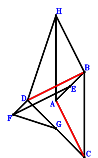
\(\because \) E is the midpoint of AB \(\therefore \small\overrightarrow{BE}=\dfrac{\small\overrightarrow{BA}}{2}\).\(\because \) EBDF is a parallelogram \(\therefore \small\overrightarrow{BF}=\dfrac{\small\overrightarrow{BA}}{2} + \small\overrightarrow{BD}\).\(\because \) G is the midpoint of CD \(\therefore \small\overrightarrow{BG}=\dfrac{\small\overrightarrow{BC}}{2} + \dfrac{\small\overrightarrow{BD}}{2}\).\(\because \) ACBH is a parallelogram \(\therefore \small\overrightarrow{BH}=\small\overrightarrow{BA} - \small\overrightarrow{BC}\).\(\because \) HD=2GF \( \therefore- \dfrac{\small\overrightarrow{DH}^{2}}{4} + \small\overrightarrow{FG}^{2}=- \dfrac{\left(- \small\overrightarrow{BD} + \small\overrightarrow{BH}\right)^{2}}{4} + \left(- \small\overrightarrow{BF} + \small\overrightarrow{BG}\right)^{2}=\left(- \dfrac{\small\overrightarrow{BA}}{2} + \dfrac{\small\overrightarrow{BC}}{2} - \dfrac{\small\overrightarrow{BD}}{2}\right)^{2} - \dfrac{\left(\small\overrightarrow{BA} - \small\overrightarrow{BC} - \small\overrightarrow{BD}\right)^{2}}{4}=\small\overrightarrow{BA} \cdot \small\overrightarrow{BD} - \small\overrightarrow{BC} \cdot \small\overrightarrow{BD}=0.\)In conclusion, \(\small\overrightarrow{CA} \cdot \small\overrightarrow{DB}=- \small\overrightarrow{BD} \cdot \left(\small\overrightarrow{BA} - \small\overrightarrow{BC}\right)=- \small\overrightarrow{BA} \cdot \small\overrightarrow{BD} + \small\overrightarrow{BC} \cdot \small\overrightarrow{BD}=0\), that is, AC⊥BD.
Exercise 157： Let E be the centroid of △CBD. F, E, A are collinear and FA=3FE. H, G are the midpoints of BA, CD, respectively. FD=HG. Prove that AC⊥BD.
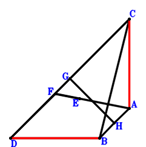
\(\because \) E is the centroid of △CBD \(\therefore \small\overrightarrow{DE}=\dfrac{\small\overrightarrow{DB}}{3} + \dfrac{\small\overrightarrow{DC}}{3}\).\(\because \) F, E, A are collinear and FA=3FE \(\therefore \small\overrightarrow{DF}=- \dfrac{\small\overrightarrow{DA}}{2} + \dfrac{3 \small\overrightarrow{DE}}{2}=- \dfrac{\small\overrightarrow{DA}}{2} + \dfrac{\small\overrightarrow{DB}}{2} + \dfrac{\small\overrightarrow{DC}}{2}\).\(\because \) G is the midpoint of CD \(\therefore \small\overrightarrow{DG}=\dfrac{\small\overrightarrow{DC}}{2}\).\(\because \) H is the midpoint of BA \(\therefore \small\overrightarrow{DH}=\dfrac{\small\overrightarrow{DA}}{2} + \dfrac{\small\overrightarrow{DB}}{2}\).\(\because \) FD=HG \( \therefore\small\overrightarrow{DF}^{2} - \small\overrightarrow{GH}^{2}=\small\overrightarrow{DF}^{2} - \left(- \small\overrightarrow{DG} + \small\overrightarrow{DH}\right)^{2}=\left(- \dfrac{\small\overrightarrow{DA}}{2} + \dfrac{\small\overrightarrow{DB}}{2} + \dfrac{\small\overrightarrow{DC}}{2}\right)^{2} - \left(\dfrac{\small\overrightarrow{DA}}{2} + \dfrac{\small\overrightarrow{DB}}{2} - \dfrac{\small\overrightarrow{DC}}{2}\right)^{2}=- \small\overrightarrow{DA} \cdot \small\overrightarrow{DB} + \small\overrightarrow{DB} \cdot \small\overrightarrow{DC}=0.\)In conclusion, \(\small\overrightarrow{CA} \cdot \small\overrightarrow{DB}=\small\overrightarrow{DB} \cdot \left(\small\overrightarrow{DA} - \small\overrightarrow{DC}\right)=\small\overrightarrow{DA} \cdot \small\overrightarrow{DB} - \small\overrightarrow{DB} \cdot \small\overrightarrow{DC}=0\), that is, AC⊥BD.
Exercise 169： Let ADEB and AGBC be parallelograms. F is the midpoint of CE. GD=2DF. Prove that AC⊥BD.
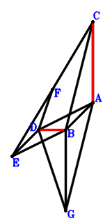
\(\because \) ADEB is a parallelogram \(\therefore \small\overrightarrow{DE}=- \small\overrightarrow{DA} + \small\overrightarrow{DB}\).\(\because \) F is the midpoint of CE \(\therefore \small\overrightarrow{DF}=\dfrac{\small\overrightarrow{DC}}{2} + \dfrac{\small\overrightarrow{DE}}{2}=- \dfrac{\small\overrightarrow{DA}}{2} + \dfrac{\small\overrightarrow{DB}}{2} + \dfrac{\small\overrightarrow{DC}}{2}\).\(\because \) AGBC is a parallelogram \(\therefore \small\overrightarrow{DG}=\small\overrightarrow{DA} + \small\overrightarrow{DB} - \small\overrightarrow{DC}\).\(\because \) GD=2DF \( \therefore\small\overrightarrow{DF}^{2} - \dfrac{\small\overrightarrow{DG}^{2}}{4}=\left(- \dfrac{\small\overrightarrow{DA}}{2} + \dfrac{\small\overrightarrow{DB}}{2} + \dfrac{\small\overrightarrow{DC}}{2}\right)^{2} - \dfrac{\left(\small\overrightarrow{DA} + \small\overrightarrow{DB} - \small\overrightarrow{DC}\right)^{2}}{4}=- \small\overrightarrow{DA} \cdot \small\overrightarrow{DB} + \small\overrightarrow{DB} \cdot \small\overrightarrow{DC}=0.\)In conclusion, \(\small\overrightarrow{CA} \cdot \small\overrightarrow{DB}=\small\overrightarrow{DB} \cdot \left(\small\overrightarrow{DA} - \small\overrightarrow{DC}\right)=\small\overrightarrow{DA} \cdot \small\overrightarrow{DB} - \small\overrightarrow{DB} \cdot \small\overrightarrow{DC}=0\), that is, AC⊥BD.
Exercise 174： Let ACED be a parallelogram. F, H, G are the midpoints of EB, AB, CD, respectively. DF=GH. Prove that AC⊥DB.
\(\because \) ACED is a parallelogram \(\therefore \small\overrightarrow{DE}=- \small\overrightarrow{DA} + \small\overrightarrow{DC}\).\(\because \) F is the midpoint of EB \(\therefore \small\overrightarrow{DF}=\dfrac{\small\overrightarrow{DB}}{2} + \dfrac{\small\overrightarrow{DE}}{2}=- \dfrac{\small\overrightarrow{DA}}{2} + \dfrac{\small\overrightarrow{DB}}{2} + \dfrac{\small\overrightarrow{DC}}{2}\).\(\because \) G is the midpoint of CD \(\therefore \small\overrightarrow{DG}=\dfrac{\small\overrightarrow{DC}}{2}\).\(\because \) H is the midpoint of AB \(\therefore \small\overrightarrow{DH}=\dfrac{\small\overrightarrow{DA}}{2} + \dfrac{\small\overrightarrow{DB}}{2}\).\(\because \) DF=GH \( \therefore\small\overrightarrow{DF}^{2} - \small\overrightarrow{GH}^{2}=\small\overrightarrow{DF}^{2} - \left(- \small\overrightarrow{DG} + \small\overrightarrow{DH}\right)^{2}=\left(- \dfrac{\small\overrightarrow{DA}}{2} + \dfrac{\small\overrightarrow{DB}}{2} + \dfrac{\small\overrightarrow{DC}}{2}\right)^{2} - \left(\dfrac{\small\overrightarrow{DA}}{2} + \dfrac{\small\overrightarrow{DB}}{2} - \dfrac{\small\overrightarrow{DC}}{2}\right)^{2}=- \small\overrightarrow{DA} \cdot \small\overrightarrow{DB} + \small\overrightarrow{DB} \cdot \small\overrightarrow{DC}=0.\)In conclusion, \(\small\overrightarrow{CA} \cdot \small\overrightarrow{DB}=\small\overrightarrow{DB} \cdot \left(\small\overrightarrow{DA} - \small\overrightarrow{DC}\right)=\small\overrightarrow{DA} \cdot \small\overrightarrow{DB} - \small\overrightarrow{DB} \cdot \small\overrightarrow{DC}=0\), that is, AC⊥DB.
Exercise 184： Let BDHC be a parallelogram. BFDE is a trapezoid with BF//ED and BF=2ED. E, G are the midpoints of CD, FA, respectively. AH=2BG. Prove that AC⊥BD.
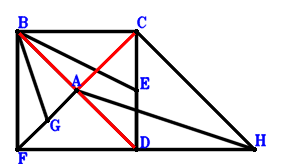
\(\because \) E is the midpoint of CD \(\therefore \small\overrightarrow{DE}=\dfrac{\small\overrightarrow{DC}}{2}\).\(\because \) BF//ED and BF=2ED \(\therefore \small\overrightarrow{DF}=\small\overrightarrow{DB} - 2 \small\overrightarrow{DE}=\small\overrightarrow{DB} - \small\overrightarrow{DC}\).\(\because \) G is the midpoint of FA \(\therefore \small\overrightarrow{DG}=\dfrac{\small\overrightarrow{DA}}{2} + \dfrac{\small\overrightarrow{DF}}{2}=\dfrac{\small\overrightarrow{DA}}{2} + \dfrac{\small\overrightarrow{DB}}{2} - \dfrac{\small\overrightarrow{DC}}{2}\).\(\because \) BDHC is a parallelogram \(\therefore \small\overrightarrow{DH}=- \small\overrightarrow{DB} + \small\overrightarrow{DC}\).\(\because \) AH=2BG \( \therefore\small\overrightarrow{GB}^{2} - \dfrac{\small\overrightarrow{HA}^{2}}{4}=- \dfrac{\left(\small\overrightarrow{DA} - \small\overrightarrow{DH}\right)^{2}}{4} + \left(\small\overrightarrow{DB} - \small\overrightarrow{DG}\right)^{2}=\left(- \dfrac{\small\overrightarrow{DA}}{2} + \dfrac{\small\overrightarrow{DB}}{2} + \dfrac{\small\overrightarrow{DC}}{2}\right)^{2} - \dfrac{\left(\small\overrightarrow{DA} + \small\overrightarrow{DB} - \small\overrightarrow{DC}\right)^{2}}{4}=- \small\overrightarrow{DA} \cdot \small\overrightarrow{DB} + \small\overrightarrow{DB} \cdot \small\overrightarrow{DC}=0.\)In conclusion, \(\small\overrightarrow{CA} \cdot \small\overrightarrow{DB}=\small\overrightarrow{DB} \cdot \left(\small\overrightarrow{DA} - \small\overrightarrow{DC}\right)=\small\overrightarrow{DA} \cdot \small\overrightarrow{DB} - \small\overrightarrow{DB} \cdot \small\overrightarrow{DC}=0\), that is, AC⊥BD.
Exercise 203： Let BGFE and HBCA be parallelograms. E, F are the midpoints of BA, CD, respectively. HD=2GD. Prove that CA⊥BD.
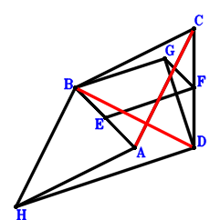
\(\because \) E is the midpoint of BA \(\therefore \small\overrightarrow{DE}=\dfrac{\small\overrightarrow{DA}}{2} + \dfrac{\small\overrightarrow{DB}}{2}\).\(\because \) F is the midpoint of CD \(\therefore \small\overrightarrow{DF}=\dfrac{\small\overrightarrow{DC}}{2}\).\(\because \) BGFE is a parallelogram \(\therefore \small\overrightarrow{DG}=\small\overrightarrow{DB} + \dfrac{\small\overrightarrow{DC}}{2} - \small\overrightarrow{DE}=- \dfrac{\small\overrightarrow{DA}}{2} + \dfrac{\small\overrightarrow{DB}}{2} + \dfrac{\small\overrightarrow{DC}}{2}\).\(\because \) HBCA is a parallelogram \(\therefore \small\overrightarrow{DH}=\small\overrightarrow{DA} + \small\overrightarrow{DB} - \small\overrightarrow{DC}\).\(\because \) HD=2GD \( \therefore\small\overrightarrow{DG}^{2} - \dfrac{\small\overrightarrow{DH}^{2}}{4}=\left(- \dfrac{\small\overrightarrow{DA}}{2} + \dfrac{\small\overrightarrow{DB}}{2} + \dfrac{\small\overrightarrow{DC}}{2}\right)^{2} - \dfrac{\left(\small\overrightarrow{DA} + \small\overrightarrow{DB} - \small\overrightarrow{DC}\right)^{2}}{4}=- \small\overrightarrow{DA} \cdot \small\overrightarrow{DB} + \small\overrightarrow{DB} \cdot \small\overrightarrow{DC}=0.\)In conclusion, \(\small\overrightarrow{CA} \cdot \small\overrightarrow{DB}=\small\overrightarrow{DB} \cdot \left(\small\overrightarrow{DA} - \small\overrightarrow{DC}\right)=\small\overrightarrow{DA} \cdot \small\overrightarrow{DB} - \small\overrightarrow{DB} \cdot \small\overrightarrow{DC}=0\), that is, CA⊥BD.